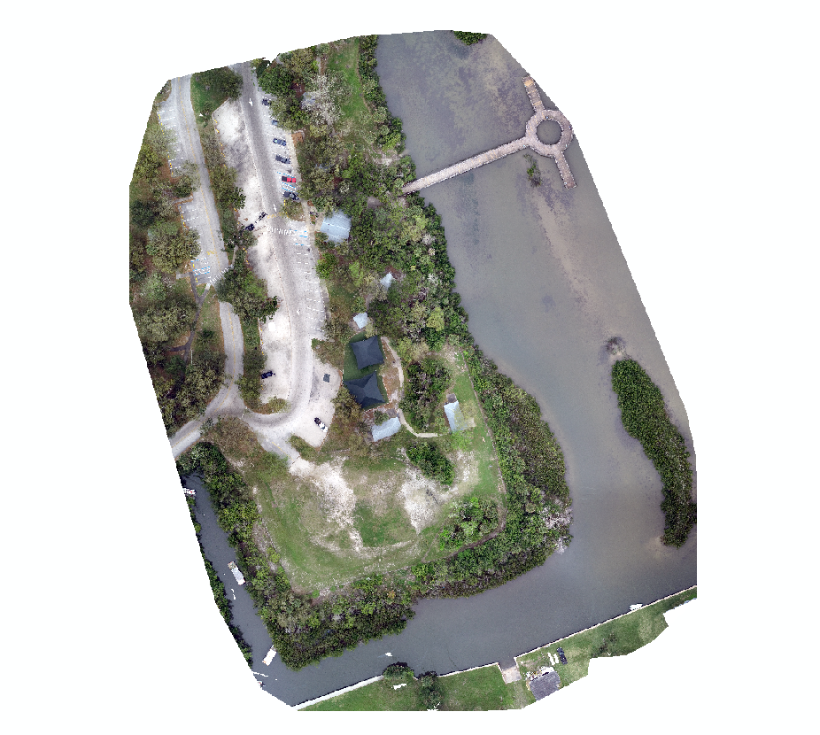

3 minutes read
Citizen Science GIS at University of Central Florida carried out two drone mapping field trips (with FAA certified pilots) to Indian River Lagoon on Feb. 28 and Mar. 5, 2019. The fieldwork was planned and carried out by Dr. Bo Yang, Michael Feinman, Tori-Gaye Atterbury, and Amber Rutstein. This fieldwork was in preparation for the new 1.3M NSF Smithsonian eelgrass mapping project with the Smithsonian MarineGeo program. The drone mapping portion of that grant is led by Dr. Timothy Hawthorne and Dr. Bo Yang.
While we weren't looking at eelgrass here, we were using the fieldwork to train our student team in the drone data collection protocols we will use later in the eelgrass project on the west coast of North America.
During the fieldwork, we deployed both DJI phantom 4 and Parrot bluegrass multi-spectral drones, collected Ground Control Points (GCPs) using a Trimble high-performance GNSS system. The orthomosaics of the drone imagers were created using Pix4D and Drone2Map, as well as atmospheric corrections for the drone imagery.
A Parrot Bluegrass multi-spectral drone was deployed over the Indian River Lagoon. The advanced UAV system is able to collect multi-spectral imagery including NIR, Red edge, Red, Green, and Blue bands. The imagery was stitched and georeferenced in Pix4D. See below for the updated multi-spectral near infrared false color combination.
Besides the Parrot bluegrass multi-spectral drone, we also used a DJI Phantom 4 Pro to collect the RGB natural color combination over the Indian river lagoon. 200+ images were taken by the DJI phantom 4 and orthomosaics were created using ESRI Drone2Map. See below for the natural color combination of the georeferenced imagery over the study region.

Ground Control Points (GCPs) were collected using a Trimble high-performance GNSS system. The horizontal accuracy of the GCPs collected using Trimble R1 GNSS system can reach 0.3-0.5 meter, which tremendously enhanced the geo-reference accuracy of the drone imagery. We selected the corner of the parking lot, intersection of the roads, and corner of the deck for collecting the GCPs, so those points can be obviously detected in the drone images.
The multi-spectral drone mapping product from the Parrot Bluegrass is able to generate multi-spectral imagery including NIR, Red edge, Red, Green, and Blue bands. Therefore, the normalized difference vegetation index (NDVI) could be calculated from the drone mapping imagery. NDVI is a widely used numerical indicator that uses the visible (VIS) and near-infrared bands (NIR) of the electromagnetic spectrum, and is utilized to analyze whether the area contains live green vegetation or not.
NDVI values usually represent water bodies (ranging from -0.0175 to -0.328), Built environment (ranging from -0.019 to 0.060) and bare soil (ranging from -0.001 to 0.166). The NDVI values for dense vegetation ranges from 0.500 to 0.575 (Jeevalakshmi et al. 2016).
By taking advantage of the multi-spectral data, and NDVI calculated from the drone mapping imagery, we are able to generate a simple classification. Above is the classification result showing the deep and shallow water, road/mud, mangroves and mixed vegetation. Further geographical analysis are ongoing for better utilization of the drone mapping imagery. Stay tuned for more from #citizensciencegis
See below for the vlog of the field trip, follow us on Linkedin, Twitter, and Facebook for #citizensciencegis
Updated: March 11, 2019